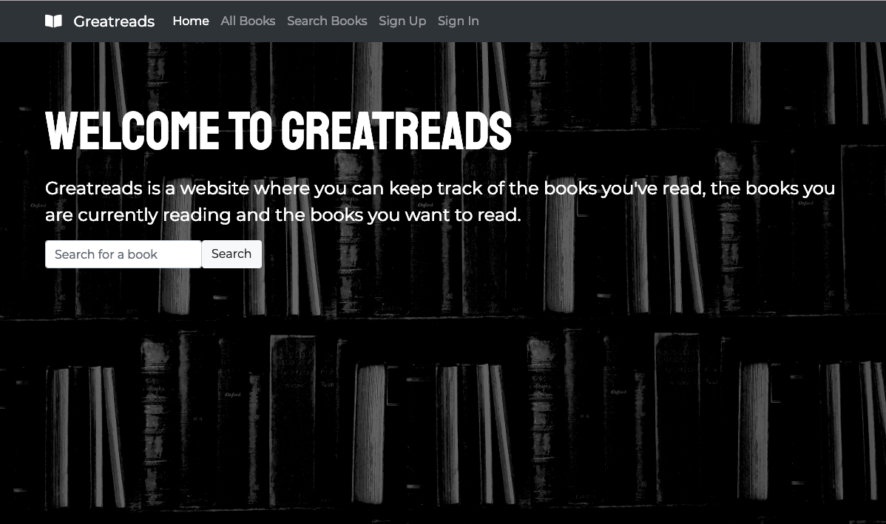

Greatreads
For this project, I wanted to recreate one of my most visited websites - Goodreads. Using Ruby on Rails, I built an app that allowed users to search for books via the Google Books API, and save them on one of three shelves.
My journey as a web developer began a short 4 months ago. Wanting to see if my love of languages went beyong learning French and Mandarin, I began teaching myself Javascript online in my spare time. It wasn't long before realising coding was something I wanted to pursue, and took an immersive course at General Assembly.
Now, just having graduated, I'm looking to take my first step into what I know will be an exciting career as a developer.
Other than coding, I love being at the beach (born and bred Queenslander!), playing cards or board games, reading, and travelling.
My first real coding project - a very simple game of Tic Tac Toe. Just a couple of weeks into my coding journey, this was my first experience with translating logic into code. I initially struggled with the concept of separating 'business logic' from jQuery.
For this project, I wanted to recreate one of my most visited websites - Goodreads. Using Ruby on Rails, I built an app that allowed users to search for books via the Google Books API, and save them on one of three shelves.

This was my first group project, completed with 3 fellow GA students. We wanted to learn to use d3.js to display data in various ways. Other tech used inclues Ruby on Rails, jQuery, JS, HTML & CSS.
My finaly project at GA was quite ambitious. The goal was to create an app that my family could use to coordinate a schedule for my grandparents in one central place. This has a long way to go but it is something I hope to keep working on.